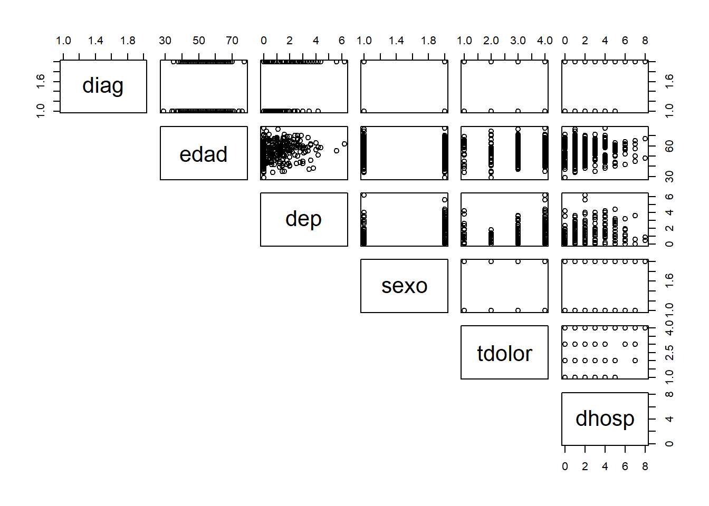
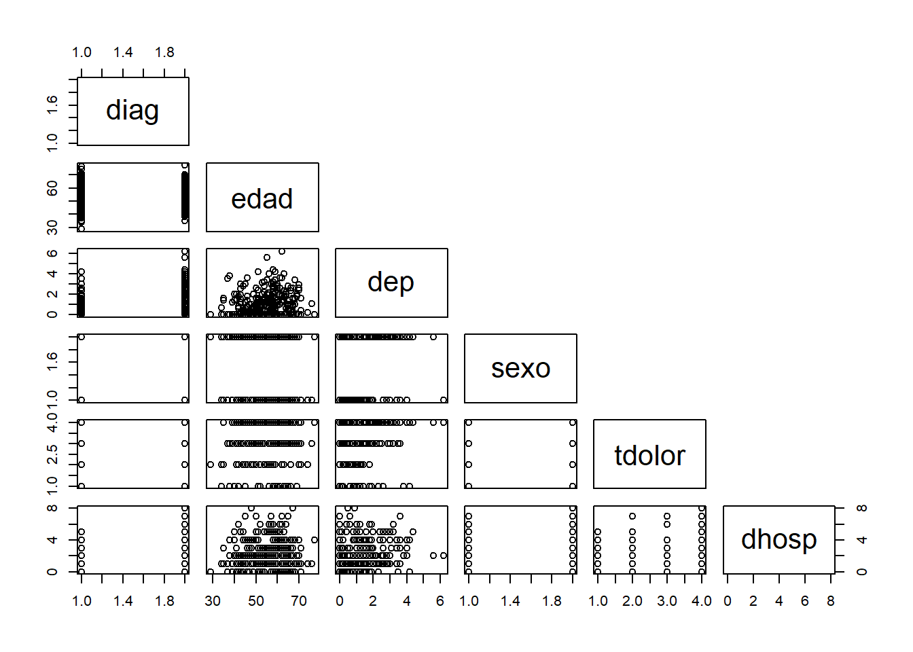
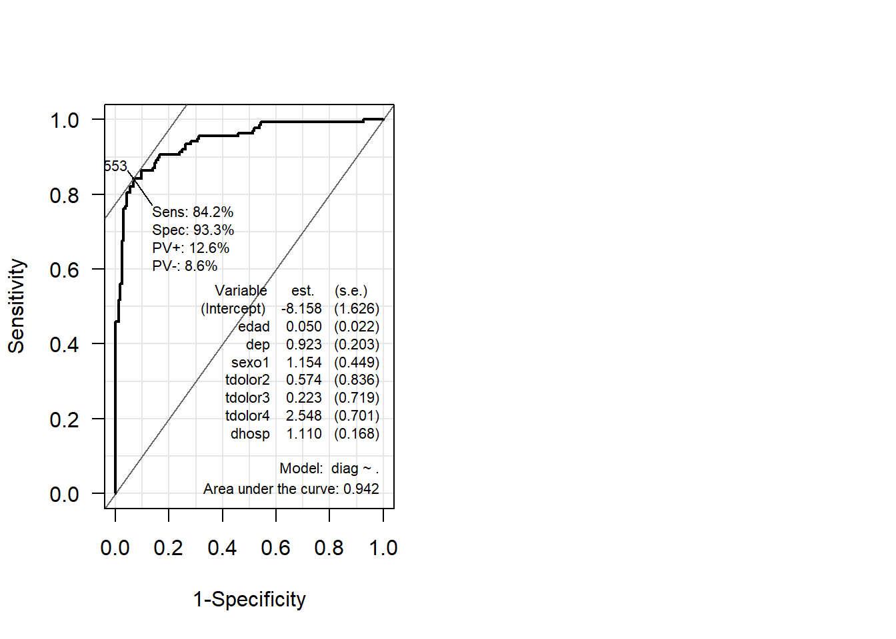
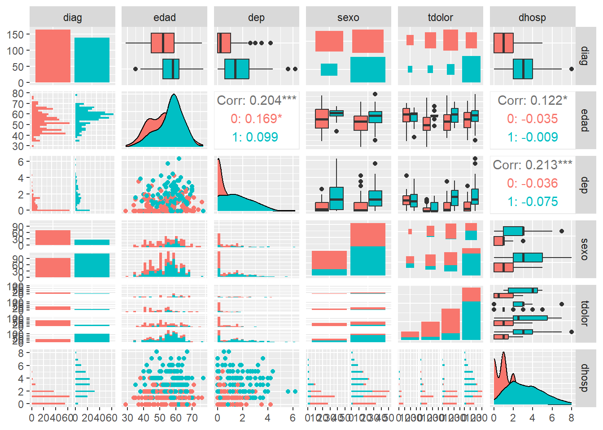
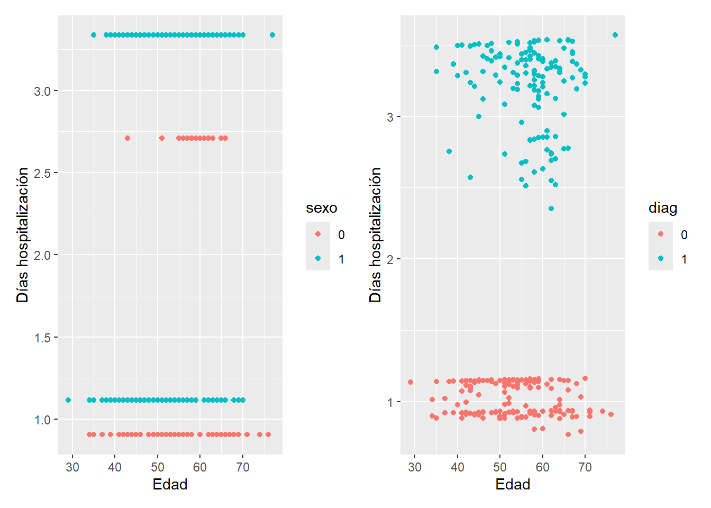

En el capítulo @ref(sec-LM) de modelos lineales se introdujo la idea de utilizar modelos estadísticos para entender cómo una variable depende de otras que podrían influir en su comportamiento. En dicho capítulo, la variable dependiente/respuesta considerada era continua y se pretendía explicar o predecir a partir de otras variables (de distinto tipo), pero, en ocasiones la variable respuesta es de otro tipo, discreta o categórica y también se pretende ver cómo influyen otras variables en ella. Por ejemplo:
el número de días de hospitalización, en función de la enfermedad, sexo, edad, etc.
diagnosticar, o no, de una enfermedad al paciente, en función del sexo, valores de analítica en sangre, nivel de colesterol, etc.
Estos ejemplos no se pueden abordar correctamente con el modelo de regresión lineal múltiple presentado, pues la variable respuesta, al ser discreta, y sobre todo si es categórica, no sigue una distribución Normal, lo cual es un requisito en regresión. Concretamente, algunas variables respuestas discretas se pueden modelizar mejor con una distribución de Poisson, como las variables que son conteos (como el número de días de hospitalización, que sólo toman valores enteros no negativos). Las variables respuesta de tipo categórica dicotómica (como tener o no una enfermedad) se modelizan con una distribución de Bernoulli, muy alejada de la distribución Normal.
Para abordar estos problemas con variable respuesta no continua, se introduce en este capítulo el modelo lineal generalizado (GLM) (cuidado que el calificativo generalizado tiene una connotación distinta a general, que es habitual utilizar para hablar de lo que hemos llamado modelo de regresión lineal múltiple), que amplía el marco de la regresión lineal permitiendo que la variable dependiente siga cualquier distribución dentro de la familia exponencial. Además, este modelo admite que la varianza de los errores no sea constante.
Nos centraremos en dos aplicaciones concretas de los GLM: la regresión logística, adecuada para variables binarias, y la regresión de Poisson, ideal para datos de conteo. Ambos enfoques permiten modelar correctamente los ejemplos planteados.
Un par de referencias bibliográficas sobre este tema, que conjugan teoría y práctica, son las ya mencionadas en capítulos anteriores: James et al. (2013) y Fernández-Avilés y Montero (2024). Una referencia bibliográfica clásica sobre GLMs es McCullagh y Nelder (1989).
Los modelos lineales no permiten resolver determinados problemas (problemas de clasificación, supervisada!!)
3.1 Modelo. Función de enlace
La forma de definir el modelo lineal generalizado difiere de la del modelo lineal de regresión. La idea detrás del modelo lineal de regresión es predecir valores de la variable respuesta \(Y\), a partir de la combinación lineal de los predictores \(X = (X_1, \ldots , X_k)\) y sus correspondientes parámetros estimables \(\beta = (\beta_1, \ldots , \beta_k)\). Si la variable \(Y\) no es continua, pongamos por caso que es dicotómica, y toma valores 0 y 1, la predicción de una respuesta media obtenida para unos determinados valores de \(X\) difícilmente proporcionará siempre los valores 0 ó 1 (que son sus dos únicos valores admisibles). Es por ello que se introduce la denominada función de enlace, \(g\), que, escogida cuidadosamente, permitirá obtener tales valores. Matemáticamente: \[E(Y) = g^{-1}(X \beta),\] donde:
\(Y\) es el vector que contiene las variables respuesta, que puede seguir cualquier distribución de probabilidad de la familia exponencial: Normal (por tanto el modelo de regresión lineal es un caso particular de GLM), Bernoulli/binomial (utilizada en la denominada regresión logística), la Poisson, la gamma, etc..
\(E(Y)\), será el valor medio de la variable respuesta,
\(X \beta\), es el predictor lineal, la “estructura” que aportan los predictores, que intentan explicar el comportamiento de la variable respuesta,
\(g(\cdot)\), la función de enlace, la que otorga la generalización a los GLM, y que relaciona la “estructura” con la distribución de probabilidad de la variable respuesta. En (McCullaghyNelder1989?) se indican la _función de enlace canónica* asociada a cada distribución de probabilidad (pueden utilizarse otras funciones para cada distribución):
Tanto en la distribución Bernoulli, como en la Poisson, aparece el logaritmo (neperiano) en la función de enlace, lo que conducirá a efectos multiplicativos de los factores o covariables sobre la respuesta, como se verá más claramente en la Sec. @ref(SECCinterp). Este es un punto que las distingue de la regresión lineal, en la que los efectos son aditivos.
Lo que no cambia respecto al modelo lineal de regresión son las etapas del análisis de un GLM:
Especificación: se estiman los parámetros de la estructura (predictor lineal) predefinida de antemano. A diferencia de la regresión lineal múltiple, que utiliza estimadores de mínimos cuadrados, en los GLMs se utilizan estimadores de máxima verosimilitud (si no se tiene normalidad en la variable respuesta, los estimadores de mínimos cuadrados no serán eficientes). Tras la estimación se deberá realizar la correspondiente diagnosis.
Predicción: El modelo (predeterminado) estimado se utiliza para predecir nuevas respuestas. Veremos que dichas respuestas podrán ser, según sea el caso: valores, probabilidades de ocurrencia, etc. Esta parte se utiliza sobre todo para el enfoque de “Machine Learning”, al utilizar los errores de predicción como métrica para comparar modelos y elegir el que mejores predicciones realice para el problema entre manos.
3.2 GLMs particulares
De entre los distintos casos particulares de modelos lineales generalizados, predomina el modelo de regresión logística, que veremos a continuación. Se suele etiquetar como modelo para problemas de clasificación (supervisada), lo que tiene una gran relevancia en multitud de campos científicos, como la Epidemiología, Psicología, Economía, etc. Hablar de clasificación proviene del hecho de que la variable respuesta \(Y\) que queremos explicar o predecir consiste en la pertenencia, o no, a un determinado grupo de interés.
Se distingue entre clasificación supervisada y no supervisada cuando se conoce (o no) la clasificación correcta de los datos de entrenamiento (en el conjunto de datos hay una variable que contiene dicho valor de clasificación, o no la hay). La regresión logística predomina sobre otros métodos de clasificación supervisada (Análisis Discriminante, \(K\)-vecinos más próximos (KNN), etc.) al poseer una interpretabilidad que no poseen los otros métodos (véase la imagen del Capítulo 2 de James et al. (2013))
El otro modelo lineal generalizado que veremos es el de la regresión de Poisson.
3.2.1 Regresión Logística
La aplicación de una regresión logística se asocia a una variable respuesta dicotómica. que pretendemos explicar a partir del conocimiento de otras variables. Habitualmente se considera que toma el valor \(Y = 0\) si no pertenece al grupo, e \(Y = 1\) si pertenece al grupo (por ejemplo, diagnosticados de enfermedad X, morosos, piezas defectuosas, etc.). Al igual que en el modelo de regresión múltiple, a partir de un conjunto de \(k\) variables explicativas \(X_1, X_2, \ldots, X_k\) queremos predecir \(Y\), y clasificar al individuo en el grupo, o no.
Si modelizamos la variable respuesta, mediante una distribución de Bernoulli, dicha distribución quedará caracterizada por la probabilidad de pertenencia al grupo, \(p\). Así, \(P[Y = 1] = p\) y \(P[Y = 0] = 1-p\), y \(E[Y] = p\). Con los datos disponibles (tanto de la variable \(Y\) como de las \(k\) variables explicativas) se intentará estimar dicho valor \(p\), es decir, \(\hat{p}\), mejor dicho se estimará el modelo, con la intención de clasificar nuevos individuos o elementos (predecir el grupo al que pertenecerá), con la información que proporcionan sus valores de las variables explicativas. En el proceso de estimación se determinaran aquellas variables que influyen significativamente en la clasificación.
Según la formulación del modelo lineal generalizado: \[E[Y] = g^{-1}(\beta_0 + \beta_1 X_1 + \ldots + \beta_k X_k).\] Y concretamente para la regresión logística: \[ \text{logit}(p) = \log{ \Big(\dfrac{p}{1-p} \Big)} = \beta_0 + \beta_1 X_1 + \ldots + \beta_k X_k.\] Al estimar el modelo como si fuese una regresión múltiple, el predictor lineal no proporcionará valores plausibles de la variable respuesta \(Y\), sino que proporciona valores de logit(\(p\)), es decir, de la estimación del logaritmo del ratio entre la probabilidad de pertenecer al grupo de interés, \(p\), y la de no pertenecer a dicho grupo, \(1-p\), o dicho en escala logarítmica, la diferencia entre pertenecer y no pertenecer al grupo. La ventaja de utilizar el logit, es que transforma los valores del predictor que podrían estar en cualquier rango de valores, a valores para \(p\): \[ p = \dfrac{e^{\beta_0 + \beta_1 X_1 + \ldots + \beta_k X_k}}{1+e^{\beta_0 + \beta_1 X_1 + \ldots + \beta_k X_k}},\] que tienden a 0 por la izquierda y a 1 por la derecha, sin llegar a alcanzar nunca estos valores, por lo que la predicción será siempre un valor válido para una probabilidad. La función logística, en la parte central de su dominio, es prácticamente lineal. Esto implica que para modelizar respuestas de probabilidad moderada, el modelo lineal y el logístico no diferirán mucho. La contrapartida es que que se pierde la linealidad entre el predictor y la probabilidad conforme las probabilidades se aproximan a 0 o a 1, y la interpretación de los parámetros estimados se complica.
Como se ha mencionado, existen otras posibles funciones enlace, como la inversa de la distribución normal tipificada que conduce al denominado modelo probit (muy utilizado en Economía), o tomar la inversa de la distribución uniforme. La curva de la función logística y la de la función probit son muy similares, pero la logística tiene colas más pesadas (véase Peña (2002), página 642).
3.2.1.1 Interpretación del modelo
El predictor lineal se puede reescribir en forma de diferencias con respecto a la media de cada variable: \[\text{logit}(p) = \beta_0 + \beta_1 (x_{1i} - \bar{x}_1) + \ldots + \beta_k (x_{ki} - \bar{x}_k).\] Así, \(\beta_0\), la ordenada en el origen, es el valor del logit cuando las variables son iguales a sus medias. En tal caso, si \(\beta_0 = 0\), se tendría que logit\((p) = 0\) lo que conduce a \(1 = p_i/(1-p_i)\) y por lo tanto \(p_i = 0.5\). Y si \(\beta_0 \neq 0\) se tendrá que \(p_i = 1/(1 + \exp(-\beta_0))\).
De la expresión inicial dada del logit, al aplicar la exponencial a ambos términos se llega a: \[p = \exp(\beta_0 + \beta_1 X_1 + \ldots + \beta_k X_k) = \exp(\beta_0)\prod_{i = 1}^k \exp(\beta_i)^{X_i}\] Así, en un modelo de regresión logística, los valores estimados de los parámetros, \(\hat{\beta}_i\) son difíciles de interpretar, pues, proporcionan, ceteris paribus (sin variar el valor de las demás variables), el cambio en escala logarítmica de los llamados odds, \(\frac{\hat p}{1-\hat p}\), por unidad de cambio en \(x_i\). La interpretación se suele hacer a través de las funciones \(\exp(\hat\beta_i)\) denominadas odds ratios, que indican cuánto se modifican las probabilidades de pertenecer o no al grupo de interés por unidad de cambio en la variable \(x_i\). Es decir, si mantenemos todas las variables en los mismos valores, menos una variable que cambia en una unidad de un individuo/elemento a otro, todas las exponenciales darán como resultado 1 excepto el término \(\exp(\hat\beta_i)\), y \(\exp(\hat\beta_0)\) que no depende de las \(x_i\). Y si cambian dos variables en una unidad, aparecerán ambos términos multiplicándose. De aquí se deduce que el modelo de regresión logística es multiplicativo, en lugar de aditivo como es el modelo de regresión lineal. Así, si \(e^{\hat{\beta}_i}<1\) disminuye la probabilidad de pertenecer al grupo de interés, aumentando dicha probabilidad cuando \(e^{\hat{\beta}_i}>1\), ceteris paribus.
El modelo de regresión de Poisson, al tener también el logaritmo en la función de enlace, heredará esta propiedad de modelo multiplicativo.
3.2.1.2 Estimación de los parámetros
3.2.1.3 Adecuación del modelo
La adecuación del modelo se puede realizar mediante contrastes de hipótesis…
(Harrel2015)
Los supuestos que deben verificarse son la linealidad entre cada variable y el logaritmo de las odds y la ausencia de interacción entre variables explicativas y factores (lo que hace que las pendientes sean paralelas, no cambien las pendientes).
3.2.1.3.1 Poisson
(statbook4) With the residual deviance and residual degrees of freedom, we test for overdispersion: The residual deviance (736.33) is much greater than the residual degrees of freedom (477), indicating substantial overdispersion, so before interpreting any of the effects, we should refit the model using quasipoisson errors:
3.2.1.4 Curva ROC
La aplicación más común de la regresión logística es utilizarla como método de clasificación, más allá de estimar probabilidades, basándose en los valores de las variables explicativas que influyen en el modelo. Esta clasificación se realiza estableciendo un umbral de probabilidad, que determina la pertenencia a un grupo u otro. Por ejemplo, se podría considerar que un individuo pertenece al grupo si la probabilidad estimada supera 0.6, y que no pertenece en caso contrario.
Para evaluar la eficacia del modelo en esta tarea de clasificación, se recurre al análisis de los aciertos y errores cometidos, en función del umbral de probabilidad escogido. Para ello, se introducen dos métricas fundamentales: la sensibilidad y la especificidad, que se calculan a partir de la matriz de confusión. Véamoslas con un ejemplo. Imaginemos que tenemos una prueba rápida para diagnosticar una enfermedad, que no siempre acierta. Y por otro lado, supongamos que se conoce realmente quién tiene esa enfermedad. Esquemáticamente:
Matriz de confusión
Enfermedad Presente
Enfermedad Ausente
Prueba Positiva
Verdadero Positivo (VP)
Falso Positivo (FP)
Prueba Negativa
Falso Negativo (FN)
Verdadero Negativo (VN)
La sensibilidad, también conocida como tasa de verdaderos positivos, indica la proporción de casos positivos correctamente identificados por el modelo: \[ \textit{sensibilidad} = \dfrac{VP}{VP+FN}\]
Por su parte, la especificidad, o tasa de verdaderos negativos, refleja la capacidad del modelo para identificar correctamente los casos negativos: \[ \textit{especificidad} = \dfrac{VN}{VN+FP}\]
Estas métricas pueden representarse gráficamente para distintos valores del umbral de clasificación, lo que permite observar cómo varían la sensibilidad y la especificidad a lo largo del rango de probabilidades (de 0 a 1). La herramienta habitualmente utilizada para este análisis es la curva ROC (Receiver Operating Characteristic), que muestra la sensibilidad frente a la tasa de falsos positivos (es decir, \(1 -\) especificidad) para diferentes puntos de corte (umbrales). Esta representación se ha convertido en un estándar para evaluar modelos de clasificación. Un clasificador aleatorio presentaría una curva ROC coincidente con la diagonal, mientras que en un clasificador perfecto la curva abarcaría toda la parte superior del gráfico. El resto de clasificadores se moverán entre ellos dos.
El AUC (Area Under the Curve) asociado a una curva ROC proporciona una medida cuantitativa del rendimiento del modelo. El valor máximo de AUC es 1, indicando un método de clasificación perfecto, asociado a una curva en ángulo recto que abarca todo el área del gráfico, mientras que un modelo sin capacidad predictiva (equivalente a una clasificación aleatoria) tendría una curva ROC alineada con la diagonal y un AUC de 0.5. Cuanto más próximo a 1 esté el valor de AUC mayor capacidad discriminante tendrá el modelo. Esta métrica resulta especialmente útil para comparar distintos modelos de regresión logística o incluso otros algoritmos de clasificación.
El más conocido de los métodos de clasificación supervisada es la regresión logística, cuyos resultados poseen una interpretabilidad que otros métodos (Análisis Discriminante, \(K\)-vecinos más próximos (KNN), etc.) no poseen (véase la imagen del Capítulo 2. de James et al. (2013)) En ISLR2 también se incluye en el Lab Regresión de Poisson. Por último, hecho en falta en el material original mostrar en este apartado el tema de curvas ROC. Aparece más adelante en el Lab de SVM (apartado 9.3).
3.2.2 Regresión de Poisson
Cuando la variable respuesta es razonable modelizarla con la distribución de Poisson, por ejemplo, cuando es de tipo conteo, se puede realizar una regresión de Poisson, cuyo objetivo es explicar dicha variable en función de \(k\) variables explicativas \(X_1, X_2, \ldots, X_k\) que influyen (o no) sobre ella. En este caso, la distribución de Poisson queda caracterizada por su media, \(\lambda\) (que coincide también con su varianza). Con los datos disponibles se estimará el modelo, con la intención de predecir valores de la variable respuesta \(\hat{Y}\) con la información que proporcionan los valores de las variables explicativas, de aquellas que salgan significativas. Aquí tampoco tiene cabida el modelo de regresión lineal, porque, entre otras, las predicciones podrían arrojar valores negativos, o no enteros.
Como se ha visto en regresión logística, dado que la función de enlace es de tipo logarítmico, los efectos de las variables explicativas serán también _multiplicativos*.
3.3 Caso práctico: cleveland
Para realizar regresión lineal generalizada con R, se puede utilizar la función glm() del paquete stats (cargado por defecto al iniciar sesión). Con ella realizaremos tanto la regresión logística, como la regresión de Poisson.
3.3.1 Análisis exploratorio
Vas a ver un caso práctico basado en los datos cleveland incluidos en el paquete CDR y estudiado en Casero-Alonso y Durbán (2024). Se pueden ver otros ejemplos, con otros conjuntos de datos, en James et al. (2013) (lab del capítulo 4).
diag edad dep sexo tdolor dhosp
0:164 Min. :29.00 Min. :0.00 0: 97 1: 23 Min. :0.000
1:139 1st Qu.:48.00 1st Qu.:0.00 1:206 2: 50 1st Qu.:1.000
Median :56.00 Median :0.80 3: 86 Median :2.000
Mean :54.44 Mean :1.04 4:144 Mean :2.033
3rd Qu.:61.00 3rd Qu.:1.60 3rd Qu.:3.000
Max. :77.00 Max. :6.20 Max. :8.000
Como se puede apreciar, en este caso tenemos sólo 6 variables, 3 de ellas factores. Para la regresión logística, la variable dicotómica que interesa explicar es diag, el diagnostico de accidente coronario (consultando la ayuda se puede ver que 1 significa sí diagnosticado de accidente coronario), a partir del resto de variables: edad, dep (depresión en el segmento ST inducida por ejercicio en relación al reposo), sexo, tdolor(tipo de dolor), dhosp (días de hospitalización). Para la regresión de Poisson, la variable discreta a explicar será dhosp, en función del resto (incluida diag).
pairs(cleveland, lower.panel =NULL)

pairs(cleveland, upper.panel =NULL)

Se ha separado la visualización de pairs para mostrar los gráficos de dispersión de cada una de las variables, por un lado, frente a diag como variable respuesta (primera fila del primer gráfico depairs()), y por otro lado, frente a dhosp como variable respuesta (última fila del segundo gráfico depairs()).
Un detalle llamativo es que, a pesar de que diag toma valores 0 y 1, en los gráficos se muestra con valores 1 y 2, lo que puede cambiarse, como se puede ver en Casero-Alonso y Durbán (2024). ¿Sabría cómo hacerlo?
3.3.2 Regresión logística
Vamos a ajustar el modelo de regresión logística indicado anteriormente. En formato de fórmula de R: diag ~ .. Utilizamos la función glm(), que tiene la misma sintaxis que lm(), pero se debe especificar el argumento family. Así, la función glm() también permite realizar regresión lineal, indicando family = gaussian. Para ajustar una regresión logística es argumento debe ser family = binomial.
Call:
glm(formula = diag ~ ., family = binomial, data = cleveland)
Coefficients:
Estimate Std. Error z value Pr(>|z|)
(Intercept) -8.15790 1.62589 -5.017 5.23e-07 ***
edad 0.05015 0.02247 2.232 0.02564 *
dep 0.92345 0.20269 4.556 5.21e-06 ***
sexo1 1.15434 0.44938 2.569 0.01021 *
tdolor2 0.57374 0.83593 0.686 0.49250
tdolor3 0.22284 0.71943 0.310 0.75676
tdolor4 2.54786 0.70137 3.633 0.00028 ***
dhosp 1.10953 0.16810 6.600 4.10e-11 ***
---
Signif. codes: 0 '***' 0.001 '**' 0.01 '*' 0.05 '.' 0.1 ' ' 1
(Dispersion parameter for binomial family taken to be 1)
Null deviance: 417.98 on 302 degrees of freedom
Residual deviance: 183.30 on 295 degrees of freedom
AIC: 199.3
Number of Fisher Scoring iterations: 6
Con la función summary() obtenemos las estimaciones del predictor lineal, y podemos ver qué variables resultan significativas y cuales no. Pero las estimaciones de los parámetros obtenidos no son las fácilmente interpretables. Los más interpretables son los odds ratios:
Así, $e^{{}} = $1.0514241, indica que, ceteris paribus y en media, una diferencia de 1 año de edad (los datos de edad vienen dados en años) aumenta la probabilidad de ser diagnosticado de la enfermedad frente a no ser diagnosticado, en un 5%. Es decir, dos pacientes con el resto de valores iguales que se diferencia en 1 año de edad, el mayor tendrá una probabilidad ligeramente mayor de ser diagnosticado. Si lo llevamos a una diferencia de 15 años, manteniendo el resto de valores iguales, esa probabilidad aumenta en un $e^{{}15}-1 = $112.2%, es decir, más que duplica la probabilidad (lo que se ve mejor observando que $e^{_{}15} = $2.1).
Y las variables dep, sexo y dhosp tienen odds ratio por encima de 2, incluso de 3 (las dos últimas), indicando que un aumento de una unidad en dichas variables más que duplica (triplica) los odds del paciente, excepto para sexo que no tiene sentido el aumento de una unidad sino el cambio de un sexo a otro, al ser una variable factor (si se consulta la ayuda de los datos se verá que son los hombres los que, en media y ceteris paribus, más que triplican el odds de las mujeres).
El signo de las estimaciones de los parámetros sirven para explicar si el odds ratio asociado a la variable aumenta o disminuye la probabilidad de pertenecer al grupo de interés. Sobre todo si los parámetros son significativos. Valores negativos (y significativos) de las estimaciones se convertirán, con la transformación exponencial en valores por debajo de 1, indicando que el odds ratio disminuye. Es decir, al convertirse el modelo en multiplicativo, la referencia que antes era ser significativamente distinto de “0” para saber si la variable “sumaba” o “restaba” al valor de la respuesta, aquí el valor “neutro” pasa a ser el “1”, por lo que interesa que sea significativamente distinto de “1”, para indicar si la variable “aumenta” o “disminuye” significativamente el valor de probabilidad.
En regresión lineal, que un parámetro sea significativo se interpreta como significativamente distinto de cero, por el hecho de que el modelo considera efectos aditivos de las variables. El modelo de regresión logística es de efectos multiplicativos y, por ello, el valor “neutro” es el 1. Así, un parámetro significativo se interpreta ahora como significativamente distinto de 1.
Adecuación del modelo
En la salida del summary() también aparecen las deviance del modelo nulo y del ajustado, junto con sus grados de libertad y el AIC del modelo ajustado. Estos valores nos permiten comparar modelos y valorar su adecuación. En el modelo de regresión logística: \[\text{Deviance} = - 2 \log(L)\] donde \(L\) es la verosimilitud. La diferencia entre la Deviance de un modelo más elaborado y el modelo nulo se distribuye como una \(\chi^2\), lo que nos permite realizar inferencia y decidir cuál es el mejor modelo de los posibles. Este test de la razón de verosimilitud se obtiene en R con la función anova():
En las salidas anteriores se puede observar como la “ganancia” en Residual deviance varía al incluir cada variable (en un orden especificado distinto) al modelo que ya contiene las anteriores variables. La mayor disminución (y por tanto ganancia) se da al incluir primero la variable dhosp (en lugar de incluir primero edad). Aunque el resultado final es el mismo, es óptima la inclusión de todas las variables (en cualquiera de los dos órdenes), llegando a la misma Residual deviance
Otro contraste de adecuación/ajuste de un modelo de regresión logística, muy utilizado en la práctica, es el de Hosmer-Lemeshov. Comprueba si las probabilidades predichas por el modelo se corresponden bien con las observaciones reales. Lo hace agrupando los datos en deciles (10 grupos) según las probabilidades predichas, utilizando un estadístico de tipo chi-cuadrado (que mide la discrepancia entre lo observado y lo esperado). Como habitualmente, se rechazará que el modelo realiza un buen ajuste si el p-valor obtenido es bajo (típicamente inferior a 0.05), por lo que permite detectar problemas de especificación del modelo, como omisión de variables relevantes o mala elección de la forma funcional.
library(ResourceSelection)
ResourceSelection 0.3-6 2023-06-27
hoslem.test(glm.diag$y, glm.diag$fitted.values)
Hosmer and Lemeshow goodness of fit (GOF) test
data: glm.diag$y, glm.diag$fitted.values
X-squared = 9.4523, df = 8, p-value = 0.3056
Pregunta
¿A qué conclusión se llega con el contraste de Hosmer-Lemeshov?
Medidas de bondad de ajuste Para el modelo de regresión logística no tiene sentido obtener el coeficiente de determinación \(R^2\), pero existen alternativas para medir la variabilidad explicada por el modelo, y cuya interpretación es equivalente.
library(DescTools)PseudoR2(glm.diag, which ="all")
La más habitual, y por ello aparece la primera, es la Pseudo \(R^2\) de McFadden. Otras habituales son la de Cox y Snell y la de Nagelkerke. Esta última es más efectiva ya que la de Cox y Snell nunca puede alcanzar el 1.
El Pseudo \(R^2\) de McFadden se puede obtener “a mano” así:
null <-glm(diag ~1, data = cleveland, family ="binomial", )1-logLik(glm.diag) /logLik(null)
'log Lik.' 0.5614544 (df=8)
Predicción
Con la función predict() se pueden obtener predicciones dados nuevos valores de los predictores. El argumento type admite varias opciones: por defecto type = "link" genera el logit (log odds), type = "response" genera probabilidades del tipo \(P(Y = 1|X)\). Si no se proporcionan nuevos datos se calculan las predicciones para los datos utilizados para ajustar el modelo de regresión logística (fitted.values).
pred.diag.prob <-predict(glm.diag, type ="response") #probabilidadespred.diag.prob[1:10]
Como se puede apreciar probabilidades bajas se asocian a predictores negativos, mientras que probabilidades altas se asocian a predictores positivos. Para obtener una predicción concreta se deben proporcionar valores a las variables explicativas incluidas en el modelo ajustado:
paciente1 <-data.frame(edad =50, dep =3, sexo ="0", tdolor ="1", dhosp =1)paciente2 <-data.frame(edad =50, dep =3, sexo ="1", tdolor ="1", dhosp =2)pacientes <-data.frame(rbind(paciente1, paciente2))predict(glm.diag,newdata = pacientes,type ="link")
La diferencia entre los dos pacientes se localiza en sexo y que uno de ellos tiene 1 día más de hospitalización, lo que tiene un gran impacto en la respuesta predicha, ya sea la predicción de su log(odds) o la de la probabilidad de ser diagnosticado/a con la enfermedad.
Clasificación
Con estas predicciones no se está realizando clasificación alguna. Para ello se debe escoger un valor umbral de probabilidad o punto de corte con el que clasificar, bien escogido arbitrariamente, bien obtenido por el análisis de la curva ROC. Aquí, tomamos el valor de ejemplo mencionado en la parte teórica: 0.6.
Matriz de confusión
Ahora podemos comparar estas predicciones con las etiquetas verdaderas de la variable diag, esto es, construir la matriz de confusión (que depende del punto de corte escogido)
addmargins(table(pred.diag, cleveland$diag))
pred.diag 0 1 Sum
0 153 24 177
1 11 115 126
Sum 164 139 303
La clasificación es bastante satisfactoria, se han obtenido 153+115 aciertos (diagonal principal de la matriz de confusión) y sólo se han cometido 24+11 errores de clasificación, lo que supone una tasa de error de 35/303 (precisión de 268/303):
mean(pred.diag != cleveland$diag)
[1] 0.1155116
mean(pred.diag == cleveland$diag)
[1] 0.8844884
Vista la proporción, más de 1 de cada 10 casos clasificados erróneamente, los resultados no parecen tan satisfactorios. Aunque, sin duda, es mejor que un clasificador aleatorio:
pred.diag.aleat 0 1 Sum
0 73 68 141
1 91 71 162
Sum 164 139 303
1-mean(pred.diag.aleat == cleveland$diag)
[1] 0.5247525
Sensibilidad y especificidad Además de la precisión (porcentaje total de aciertos) o la equivalente tasa de error, de la matriz de confusión se pueden obtener las métricas sensibilidad y especificidad, entre otras.
library(caret)
Cargando paquete requerido: ggplot2
Cargando paquete requerido: lattice
Adjuntando el paquete: 'caret'
The following objects are masked from 'package:DescTools':
MAE, RMSE
Confusion Matrix and Statistics
pred.diag 0 1
0 153 24
1 11 115
Accuracy : 0.8845
95% CI : (0.843, 0.9182)
No Information Rate : 0.5413
P-Value [Acc > NIR] : < 2e-16
Kappa : 0.7657
Mcnemar's Test P-Value : 0.04252
Sensitivity : 0.8273
Specificity : 0.9329
Pos Pred Value : 0.9127
Neg Pred Value : 0.8644
Prevalence : 0.4587
Detection Rate : 0.3795
Detection Prevalence : 0.4158
Balanced Accuracy : 0.8801
'Positive' Class : 1
Nota: Es importante la indicación de la clase positiva, dado que el cálculo de la sensibilidad, especificidad y valores relaciones depende de ello.
Los resultados arrojan unos valores de precisión, sensibilidad y especificidad buenos.
Las referencias de valores “buenos” son subjetivas. Y sujetas al contexto. Habitualmente por encima del 80% son buenos datos. Pero hay que tener en cuenta los costes y riesgos de una mala clasificación (por ejemplo, dar un tratamiento médico cuando no hace falta, y no darlo cuando sí hace falta).
Es importante indicar que son necesarias las distintas métricas, dado que un buen dato de precisión podría estar ocultando información muy importante. Pongamos de ejemplo un caso extremo. Tenemos diez pacientes, 2 de ellos están enfermos, y 8 están sanos. Supongamos que un modelo de regresión logística clasifica a todos los pacientes como sanos. Entonces, la precisión y la especificidad serían del 80% y el 100% respectivamente. Pero la sensibilidad sería del 0%, y el modelo sería prácticamente inútil para diagnosticar la enfermedad, o en términos más técnicos, la capacidad discriminante del modelo sería muy baja.
Curva ROC La manera habitual de seleccionar el punto de corte es acudir al análisis de la curva ROC.
par(mfrow =c(1, 2))library(Epi)graf <-ROC(form = diag ~ ., data = cleveland,plot ="ROC", las =1)

La curva ROC asociada a nuestro modelo de regresión logística muestra esa idea de buen clasificador. La curva se encuentra claramente por encima de la diagonal, mostrando un calidad de clasificación mucho mejor que si lo hiciéramos aleatoriamente. El AUC es de 0.942, y que tiene sentido interpretar comparándolo con el de otros modelos, o métodos de clasificación. Entre otras cosas fácilmente deducibles, en la figura aparece el valor óptimo para el punto de corte, el que produce los valores indicados de sensibilidad, especificidad, etc.
Confusion Matrix and Statistics
pred.diag 0 1
0 153 22
1 11 117
Accuracy : 0.8911
95% CI : (0.8505, 0.9238)
No Information Rate : 0.5413
P-Value [Acc > NIR] : < 2e-16
Kappa : 0.7794
Mcnemar's Test P-Value : 0.08172
Sensitivity : 0.8417
Specificity : 0.9329
Pos Pred Value : 0.9141
Neg Pred Value : 0.8743
Prevalence : 0.4587
Detection Rate : 0.3861
Detection Prevalence : 0.4224
Balanced Accuracy : 0.8873
'Positive' Class : 1
En la comprobación se obtienen los valores mostrados en la curva ROC.
3.3.3 Regresión de Poisson
Aprovechamos el mismo conjunto de datos, cleveland, para ajustar una regresión de Poisson, aprovechando que la variable dhosp (número de días de hospitalización de un paciente) toma valores numéricos discretos y tiene sentido modelizarla mediante una distribución de Poisson. Intentaremos encontrar el modelo de regresión de Poisson que mejor explique dhosp a partir del resto de variables incluidas en el conjunto de datos.
Análisis exploratorio
Visualizamos la relación de cada una de las variables explicativas con la respuesta mediante la función ggpairs() del paquete GGally:
`stat_bin()` using `bins = 30`. Pick better value with `binwidth`.
`stat_bin()` using `bins = 30`. Pick better value with `binwidth`.
`stat_bin()` using `bins = 30`. Pick better value with `binwidth`.
`stat_bin()` using `bins = 30`. Pick better value with `binwidth`.
`stat_bin()` using `bins = 30`. Pick better value with `binwidth`.
`stat_bin()` using `bins = 30`. Pick better value with `binwidth`.
`stat_bin()` using `bins = 30`. Pick better value with `binwidth`.
`stat_bin()` using `bins = 30`. Pick better value with `binwidth`.
`stat_bin()` using `bins = 30`. Pick better value with `binwidth`.

De toda la salida anterior nos interesa focalizarnos en la última fila de gráficos, en los que dhosp se visualiza en el eje Y. El primer gráfico muestra indicios de que la variable diag influye en los días de hospitalización, al mostrar una distribución diferente de los gráficos de barras. Lo mismo parece suceder en el cuarto gráfico, en el que se tiene en el eje X la variable sexo, por lo que también parece indicar que influye en dhosp. Hay que tener en cuenta que al incluir como color la variable diag, este cuarto gráfico y el resto, son más difíciles de visualizar, el color aporta cierta distorsión. También en el quinto gráfico de la última linea, donde se tiene tdolor como variable explicativa, se aprecia distinta distribución de los diagramas de barras, especialmente del último valor de tdolor respecto al resto, aunque hay que hacer notar que la variable tdolor no está “balanceada”. En cuanto a las dos variables numéricas, edady dep, las nubes de puntos sugieren una tendencia, pero con mucha dispersión entorno a ella.
Recordemos que esta visualización “individual” de cada uno de los predictores frente a la respuesta, es una visión parcial del problema de regresión múltiple (sea regresión general o regresión generalizada).
Ajuste e interpretación Empezamos considerando el modelo en formato de fórmula de R: dhosp ~ .. donde manejamos predictores de distinto tipo (diag es dicotómica, edad numérica, y tdolor categórica), lo que permite ilustrar las distintas interpretaciones de sus parámetros.
glm.dhosp <-glm(dhosp ~ .,data = cleveland, family ="poisson")summary(glm.dhosp)
Call:
glm(formula = dhosp ~ ., family = "poisson", data = cleveland)
Coefficients:
Estimate Std. Error z value Pr(>|z|)
(Intercept) -0.2168175 0.3324906 -0.652 0.5143
diag1 1.1138690 0.1127728 9.877 <2e-16 ***
edad 0.0005531 0.0049004 0.113 0.9101
dep -0.0313456 0.0359078 -0.873 0.3827
sexo1 0.2141697 0.1033855 2.072 0.0383 *
tdolor2 0.1137591 0.2074925 0.548 0.5835
tdolor3 0.1145403 0.1896331 0.604 0.5458
tdolor4 0.1180416 0.1786624 0.661 0.5088
---
Signif. codes: 0 '***' 0.001 '**' 0.01 '*' 0.05 '.' 0.1 ' ' 1
(Dispersion parameter for poisson family taken to be 1)
Null deviance: 510.75 on 302 degrees of freedom
Residual deviance: 322.48 on 295 degrees of freedom
AIC: 985.63
Number of Fisher Scoring iterations: 5
La función glm() tiene implementada una función de enlace para cada distribución que se especifique mediante el argumento family. Para el caso family = "poisson" la función de enlace es el logaritmo (efectos multiplicativos), aunque existe la posibilidad de aportar otra función de enlace.
Respecto a la interpretación de los parámetros estimados, primero, sólo los predictores diag y sexo son significativos (al 5%), confirmando lo intuido de modo parcial en el diagrama de dispersión, que edad no influye en la respuesta, y tdolor tampoco por el desbalanceo entre las categorías.
Y segundo, la interpretación se debe hacer sobre la exponencial de las estimaciones, para tener las mismas unidades que la respuesta, en este caso, días de hospitalización. También decir que se predicen valores medios y que la interpretación de cada parámetro es ceteris paribus. Entrando en detalle, para las dos variables significativas, ambas de tipo dicotómico:
El parámetro estimado para diag1 es 1.1139 y su exponencial es 3.05. Por tanto, si se tiene diag=1 en lugar de diag=0 (categoría tomada como referencia, al aparecer diag1 en la salida), el número medio de días de estancia en el hospital será 3.05 veces mayor .
Para sexo, lo expresamos de otro modo equivalente: un hombre se espera que esté en el hospital 1.24 días por cada día que esté una mujer (sexo=0 que es la categoría tomada como referencia).
Aunque las otras variables no son significativas, si lo fueran:
las variables edad y dep al ser numéricas, su interpretación se hace considerando el cambio de 1 unidad de su valor (o el cambio que sea de interés). Por ejemplo, para edad, para una diferencia de 1 año entre dos pacientes, el número medio de días en el hospital se ve multiplicado por 1.0006 (impacto ínfimo, también aunque la diferencia de edad fuese de 15 años -como en el ejemplo de regresión logística-: por cada día que esté hospitalizado el más joven, el de 15 años más, estará \(e^{\beta_{edad}*15}=\) 1.0083 días). Nótese que, al ser un valor del odds ratio tan próximo a 1 (o el valor del parámetro estimado tan cercano a 0), se tiene un indicio de no significatividad, el intervalo de confianza del odds ratio contendrá al 1 (el intervalo de confianza del parámetro contendrá al 0). Para la interpretación de dep también habría que tener en cuenta su pequeño rango de valores.
Sobre la variable tdolor: al aparecer tdolor2, etc. se intuye que la categoría de referencia es tdolor = 1. Así que, de nuevo, la interpretación se hará expresando los días que, en media, estaría el paciente de cada categoría por cada día que estuviese un paciente de la categoría tdolor=1. Se puede observar que los pacientes de las categorías 2, 3 y 4 estarían, en torno a 1.12 días por cada día de los pacientes de la categoría 1. Todos aproximadamente el mismo tiempo y cercano a 1, lo que es indicio de que la variable no presenta diferencias significativas entre categorías, como se ha mencionado anteriormente.
Vistos los resultados, consideramos el modelo en el que se dejan sólo las variables significativas:
glm.dhosp2 <-glm(dhosp ~ diag + sexo,data = cleveland, family ="poisson")summary(glm.dhosp2)
Call:
glm(formula = dhosp ~ diag + sexo, family = "poisson", data = cleveland)
Coefficients:
Estimate Std. Error z value Pr(>|z|)
(Intercept) -0.09798 0.09895 -0.990 0.3221
diag1 1.09449 0.09361 11.692 <2e-16 ***
sexo1 0.20820 0.10133 2.055 0.0399 *
---
Signif. codes: 0 '***' 0.001 '**' 0.01 '*' 0.05 '.' 0.1 ' ' 1
(Dispersion parameter for poisson family taken to be 1)
Null deviance: 510.75 on 302 degrees of freedom
Residual deviance: 323.80 on 300 degrees of freedom
AIC: 976.95
Number of Fisher Scoring iterations: 5
La conclusión es clara, en el primer modelo, al introducir las variables en ese orden, algunas no aportan al ajuste, lo que tiene un impacto en el AIC (véase en la salida anterior de summary()). El segundo modelo más apropiado, con un AIC ligeramente menor.
Además, en los ajustes glm.dhosp y glm.dhosp2 hay información sobre las deviance del modelo Null y la del modelo estimado, Residual deviance, con las que se puede realizar el contraste de comparación de modelos (el simple frente al elaborado) mencionado en la Sec. @ref(secADECUACION).
Al ser los p-valores superiores a 0.05, ambos modelos se puede considerar que explican “mejor” (globalmente) que el modelo nulo, pero hemos visto que el segundo, con sólo variables significativas, es más adecuado.
Predicción
Una vez comprobada la adecuación del modelo que presenta el mejor ajuste, se pueden proporcionar predicciones de la variable respuesta, en nuestro ejemplo, número medio de días de hospitalización.
Se han escogido adecuadamente los valores de las 2 variables explicativas para 4 pacientes: los pacientes 1 y 2 presentan enfermedad coronaria (diag=1) mientras que los pacientes 3 y 4 no; los pacientes 1 y 3 son hombres (sexo=1), mientras que el 2 y el 4 son mujeres. El resto de variables no se proporcionan, al no estar incluidas en el modelo. Las predicciones obtenidas indican que el paciente 1 (hombre con enfermedad coronaria) estará hospitalizado más días, en media, que el resto, seguido de cerca por la paciente 2 (mujer con enfermedad coronaria).
También se pueden dibujar las predicciones de todo el conjunto de datos, de las 303 observaciones, que glm() ha guardado como fitted.values. Para el modelo glm.dhosp2 sería:
cleveland$hat <- glm.dhosp2$fitted.valuesggplot(cleveland, aes(x = edad, y = hat, colour = diag)) +geom_point() +labs(x ="Edad", y ="Días hospitalización")

Predicciones de todo el conjunto de datos del modelo con sólo variables significativas (izquierda) y el modelo completo (derecha).
En el gráfico de la izquierda se visualiza la diferencia encontrada en las predicciones de los 4 pacientes calculados anteriormente. Mientras que en el gráfico de la derecha se aprecian “dispersiones” respecto a los valores horizontales predichos por sexo y edad, provocadas por el resto de variables no significativas incluidas en el modelo completo.
3.3.4 Otros métodos de clasificación
En el libro “ISLR2” se puede encontrar código de R para aplicar otros métodos de clasificación al mismo conjunto de datos Smarket. Concretamente:
Análisis Discriminante Lineal (LDA: Linear Discriminant Analysis), y su comparación con la regresión logística.
KNN (K vecinos más próximos, \(K\)-Nearest Neighbors)
También se aplica KNN al conjunto de datos Caravan, comentando la necesidad del escalado de variables para aplicar este método, y comparando sus resultados con la regresión logística.
Biblio: FDCR cap 16: https://cdr-book.github.io/cap-glm.html
Casero-Alonso, Víctor, y María Durbán. 2024. «Modelos lineales generalizados». En Fundamentos de Ciencia de Datos con R. McGraw Hill. https://cdr-book.github.io/cap-glm.html.
James, Gareth, Daniela Witten, Trevor Hastie, y Robert Tibshirani. 2013. An introduction to statistical learning: with applications in R. Second. Vol. 103. Springer. https://www.statlearning.com/.
McCullagh, P., y J. A. Nelder. 1989. Generalized Linear Models. Second. Vol. 37. Monographs on Statistics y Applied Probability. Chapman; Hall.
Peña, Daniel. 2002. Regresión y diseño de experimentos. Alianza Editorial.